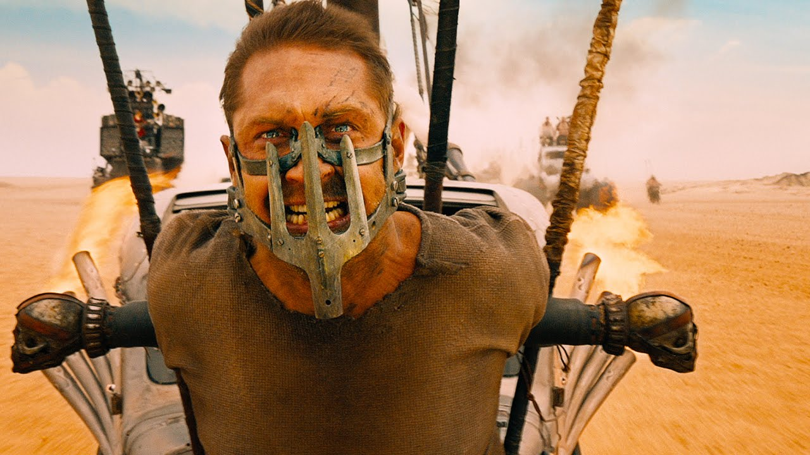

-

Tom Hardy as
Max Rockatansky
-

Charlize Theron as
Imperator Furiosa
-

Hugh Keays-Byrne as
Immortan Joe
-

Josh Helman as
Slit
Gas Town is a large structure built on flat plain area around an abandoned refinery south of The Citadel. Inhabitants are protected by a high scrap metal wall. The town was ruled by Scabrous Scrotus until Max Rockatansky killed him during Mad Max, upon his death the town was ruled by The People Eater.
The Citadel is a cluster of three rock towers that sit above an aquifer of relatively fresh water. By channeling the water through the rock, the people of the Citadel have been able to irrigate a small area of the Wasteland. It is the stronghold of Immortan Joe.
The Green Place was once inhabited by the Vuvalini of Many Mothers. It was capable of growing crops and maintaining a population of settlers. However, at some point the soil became contaminated. Vegetation stopped growing and the Green Place was plagued with crows. The Vuvalini moved on once they knew the area was incapable of supporting a harvest.
 The Last Road (Fury Road)
The Last Road (Fury Road)
The Last Road was a key run between The Citadel and Gas Town, and was used to trade The Citadel's milk and water with Gas Town's Guzzolene. The road was possibly named "The Last Road" for being one of the last stretches of tarmacked road in that part of The Wasteland.